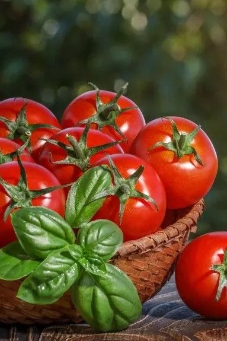

Tomato Cultivation Guide

1. Land Preparation
Plough the land thoroughly and add well-decomposed FYM (10–12 tons/acre).
Ensure good drainage; raised beds are ideal for tomato.
Soil should be loose, well-drained, and rich in organic matter.
2. Seed Selection & Sowing
Select high-yielding, disease-resistant hybrid varieties.
Seed rate: 80–100 g per acre.
Raise seedlings in nursery beds and transplant after 25–30 days.
Spacing: 60 × 45 cm or 75 × 60 cm depending on the variety.
3. Water Management
Water immediately after transplanting.
Irrigate at 7–10 day intervals depending on soil and climate.
Drip irrigation is ideal for water conservation and uniform supply.
4. Fertilization Schedule
Basal dose: 12–15 tons FYM, 40 kg Nitrogen, 60 kg Phosphorus, 40 kg Potash per acre.
Top dressing: Apply remaining nitrogen in two splits at flowering and fruit setting stage.
Micronutrients like Boron, Calcium, and Magnesium may be applied if deficient.
5. Weed & Pest Management
Weed 2–3 times manually or use mulching to suppress weeds.
Common pests: Fruit borer, aphids, whiteflies — use IPM practices and safe insecticides.
Common diseases: Leaf curl, early blight — use resistant varieties and fungicide sprays.
6. Investment Breakdown (Per Acre)
Input
Estimated Cost (INR)
Seeds
₹1,000 – ₹2,000
Fertilizers
₹3,000 – ₹4,000
Pesticides/Fungicides
₹2,000 – ₹3,000
Labor
₹6,000 – ₹10,000
Irrigation
₹2,000 – ₹3,000
Total Investment
₹14,000 – ₹22,000 per acre
7. Harvesting & Yield
Start harvesting 70–90 days after transplanting when fruits turn red.
Harvest regularly at 3–5 day intervals.
Yield: 80–120 quintals per acre under good management.
8. Market Rate & Profit Estimation
Market price: ₹10 – ₹30 per kg (varies seasonally).
Gross returns: ₹80,000 – ₹3,60,000 per acre.
Net profit: ₹60,000 – ₹3,00,000 per acre.